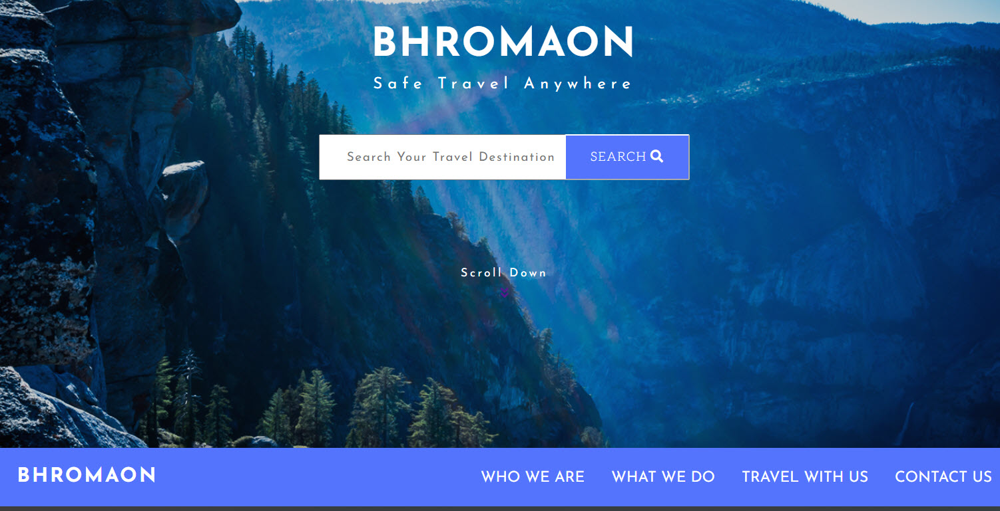
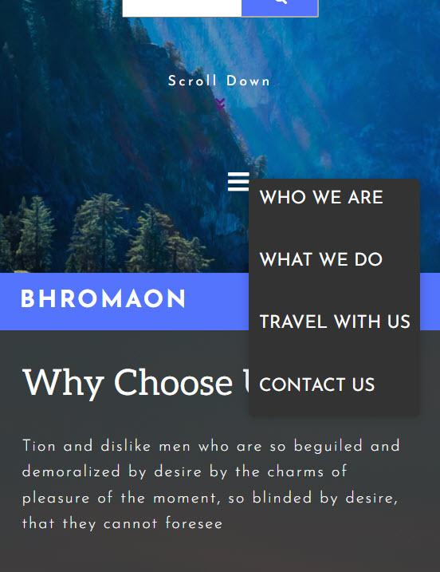
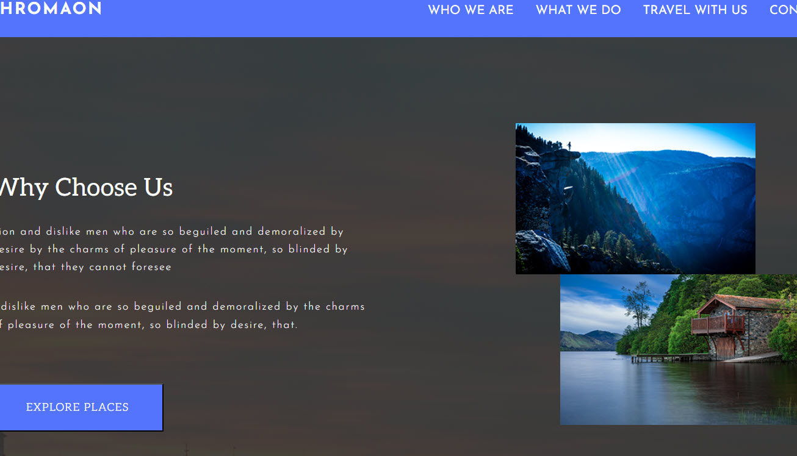
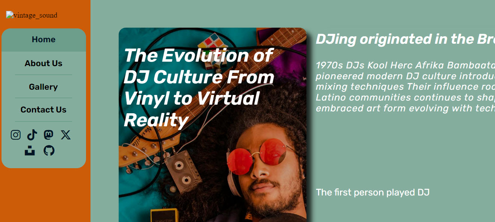
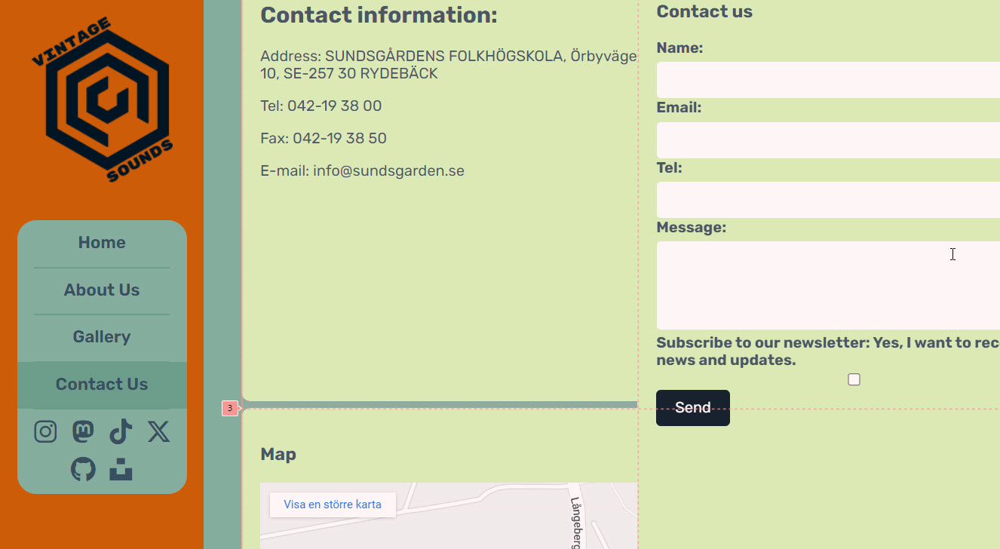
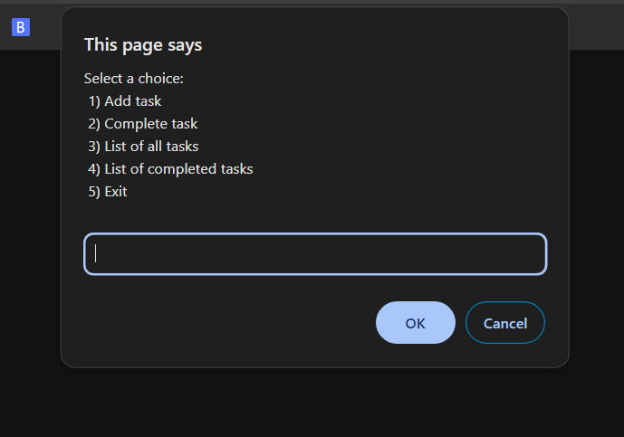
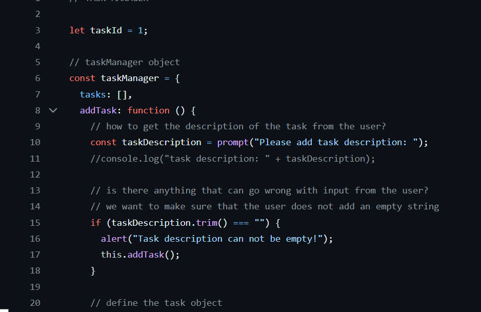

LEARNING FOR SAM LEKKLA
BACKEND DEVELOPER
Sundgårdens Folkhögskola
SAM LEKKLA
ABOUT ME
Hello, I'm Sam Lekkla and i a 32 years old, a current frontend developer nearing completion of my degree, expected in early summer. With prior experience as an IT coordinator, I bring valuable insights from the IT industry. Passionate about creative problem-solving and technological innovation, I am committed to continuous growth and deepening my skills in web development.
Basic programming skills
- HTML
- CSS
- JavaScript
- Sass
- C#
- ASP.NET Core MVC
- MongoDB
Other skills
Language Proficiency
- Swedish
- English
- Thai
Microsoft Office (Basic)
- Word
- Excel
- PowerPoint
Driver's License
- B-Driver's License
COVER LETTER
Dear Sundsgårdens Folkhögskola Recruitment Team,
I hope this letter finds you well. My name is Sam Lekkla, and I am writing to express my keen interest in the Backend Developer program at Sundsgårdens Folkhögskola.
Currently, I am pursuing studies in Frontend Development, and while I have thoroughly enjoyed my journey in this field, I find myself increasingly drawn to the complexities and challenges of backend development. It is this burgeoning interest that has led me to explore opportunities to further my skills and knowledge in this domain.
Through my ongoing studies in frontend development, I have gained a solid foundation in web technologies, including HTML, CSS, and JavaScript. These skills have enabled me to create dynamic and user-friendly interfaces, and I have found great satisfaction in bringing designs to life through code. However, as I delved deeper into the intricacies of web development, I became increasingly fascinated by the backend processes that power the functionality of the applications we use every day.
In addition to my academic pursuits, I have had the privilege of gaining practical experience as an IT Coordinator. In this role, I was responsible for managing various IT systems and providing technical support to users within the organization. This experience not only honed my problem-solving abilities but also gave me valuable insights into the inner workings of IT infrastructure. It was during this time that I realized my passion for technology and the profound impact it can have on businesses and individuals alike.
The dynamic and ever-evolving nature of the IT industry excites me, and I am eager to continue learning and growing within this field. I believe that the Backend Developer program at Sundsgården will provide me with the perfect opportunity to expand my skill set and delve deeper into the world of backend development. I am particularly drawn to your program's hands-on approach and emphasis on real-world projects, as I believe this practical experience will be invaluable in preparing me for a successful career in the industry.
Moreover, I am impressed by the supportive and inclusive community that Sundsgårdens fosters. I am eager to collaborate with fellow students and mentors who share my passion for technology and innovation, and I am confident that the learning environment at your institution will enable me to thrive both personally and professionally.
In conclusion, I am deeply motivated to pursue a career in backend development, and I am convinced that the Backend Developer program at Sundsgårdens Folkhögskola is the ideal stepping stone towards achieving this goal. I am committed to dedicating myself wholeheartedly to my studies and making the most of the opportunities that your esteemed institution has to offer.
Thank you for considering my application. I am excited about the possibility of joining your program and look forward to the opportunity to contribute to and learn from the vibrant community at Sundsgården Folkhögskola.
Best regards,
Sam Lekkla
CAREER VISIONS
As a beginner in both frontend and backend technologies, my career vision is to create seamless and impactful web applications. Completing courses in both areas equips me with the skills to design responsive user interfaces using HTML, CSS, and JavaScript, as well as to develop robust server-side logic using languages like Java or JavaScript (Node.js). I aim to leverage this expertise to contribute to innovative projects and advance in the tech industry.
PURPOSE
As I delve into the world of backend development, I find myself captivated by its intricacies and its pivotal role in shaping robust digital systems. Currently immersed in backend development studies, my fascination with this domain has only deepened. The allure lies in the profound impact backend development has on the functionality and performance of applications, forming the backbone upon which user experiences thrive.
What particularly draws me to backend development is its blend of logic, problem-solving, and creativity. Crafting efficient algorithms, optimizing database structures, and architecting scalable systems present exhilarating challenges that fuel my passion for continual learning and innovation. Moreover, the prospect of contributing to the unseen but indispensable components of software, ensuring seamless interactions and data management, resonates deeply with my desire to make meaningful technical contributions.
The dynamic nature of backend development, constantly evolving with emerging technologies and industry demands, excites me. Embracing this ever-changing landscape, I aspire to cultivate versatile skills that enable me to tackle diverse projects and adapt to evolving requirements effectively.
Enrolling in a backend development program represents more than just a career choice; it signifies a commitment to mastering a craft that I find both intellectually stimulating and professionally rewarding. I am eager to immerse myself in an environment where I can collaborate with like-minded individuals, leverage the expertise of seasoned professionals, and contribute my unique perspective to the collective pursuit of excellence in backend development.
GOAL
As I embark on my journey towards becoming a proficient developer, I envision a future where my skills bridge the realms of frontend and backend development seamlessly. Currently honing my craft in frontend development, I am poised to embark on the next phase of my learning journey, diving into the intricacies of backend development. This dual expertise paves the way for me to emerge as a well-rounded full-stack developer, equipped with the proficiency to tackle every layer of application development with confidence and finesse.
My aspiration to become a full-stack developer stems from a desire to not only understand the intricacies of user interfaces but also to master the underlying architecture that powers them. By gaining comprehensive knowledge of both frontend and backend technologies, I aim to create cohesive, efficient, and user-centric solutions that resonate with audiences and drive tangible impact.
In this rapidly evolving landscape of technology, the role of full-stack developers continues to be in high demand, offering boundless opportunities for innovation and growth. Armed with a robust skill set encompassing both frontend and backend development, I am excited to embark on a career path where I can contribute meaningfully to projects, collaborate with diverse teams, and continuously push the boundaries of what is possible in the digital realm.
PROJECTS
These are 3 of the projects I completed as part of my frontend development course both "in team" and individually. The assignments involved cloning a website using SASS and developing it further with HTML, CSS, and JavaScript.
HTML AND CSS TEST PROJECT
In this project, the "Skill Test" demanded a comprehensive approach, requiring meticulous planning, execution, and testing. Firstly, understanding the design provided through the Figma file was essential to interpret its intricacies accurately. This initial comprehension phase laid the groundwork for subsequent tasks. Planning involved breaking down the design into its components and structuring the HTML document accordingly, ensuring semantic markup for accessibility and SEO benefits.
Execution comprised implementing the HTML structure, configuring settings like favicon integration, and organizing image assets for efficiency. Sass was utilized to construct a modular and scalable CSS architecture, aligning with the design's layout and responsiveness requirements. Simultaneously, JavaScript functionality was integrated to enhance user interactivity, focusing on features like navigation menus and scroll-down animations.
Comprehensive testing was pivotal to verify functionality across diverse browsers and devices, with meticulous documentation of any issues encountered. This meticulous approach ensured the project met quality standards, with iterative refinements made to address any imperfections. Effective communication with stakeholders throughout the process facilitated clarity and alignment with expectations, culminating in the successful delivery of a high-quality end product.
link: HTML AND CSS TEST
  GROUP PROJECT WITH TARGET: DISC JOCKEY
In this project, collaboration was key as it involved a group effort with three classmates. Our task was to build HTML and CSS for a website with the theme "DISC JOCKEY," assigned by our instructor. We kicked off by planning the project layout using Figma. Tasks were delegated, and I was responsible for developing the "CONTACT" page section. Leveraging CSS grid, I meticulously positioned various sections on the page to align with our vision. Prior to the deadline, we conducted final tests and added any necessary finishing touches to ensure completeness.
link: Group Project
 Task Manager App
This "TaskManage" project assignment during my JavaScript period focused solely on coding JavaScript for TaskManage functionalities. The function took the form of a prompt-style alert at the top of the page. Starting with object and array creation to store all tasks, I then developed functions to add new tasks. Ensuring users couldn't leave fields blank and followed step-by-step instructions, I implemented alerts for user guidance and feedback. I meticulously tested the code to ensure everything functioned correctly before submission.
link: Task Manage Project
 You can also find my other projects on my GitHub profile:
Link: My Github's Link
CONTACT
SAM LEKKLA
Åsvägen 6, 263 77 Mölle SWEDEN
Tel.: 070-573 92 22

Github: My Github's Link
Linkedin: My Linkedin's link
Email: sam.lekkla@gmail.com